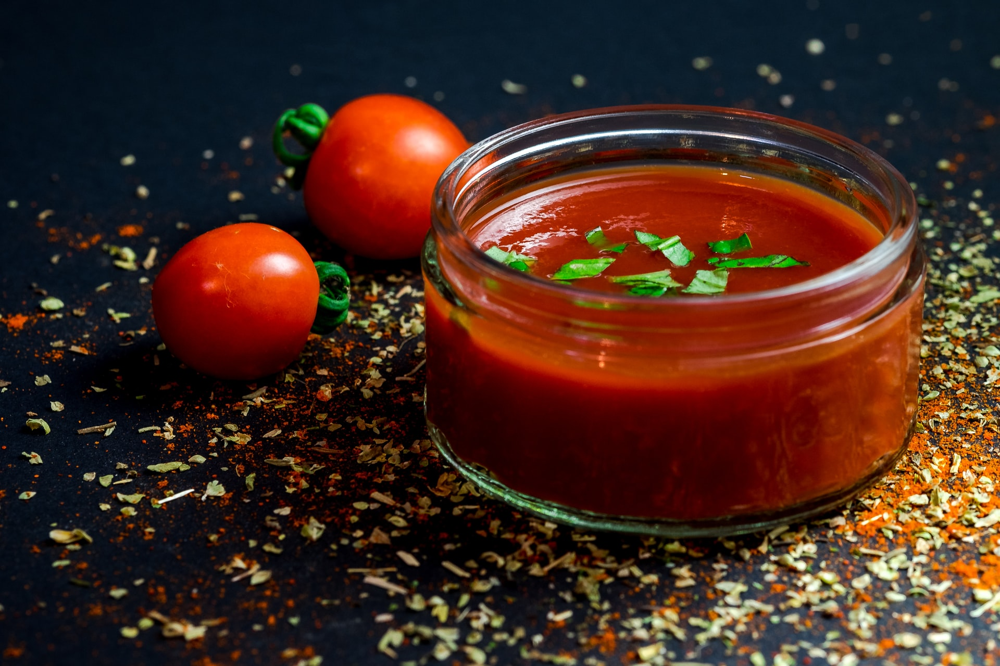

Tillbaka

Recept för Tomatsoppa
Ingridienser (4 portioner)
- 1 stor lök
- smör till stekning
- 4 färska tomater
- 1 förp krossade tomater (å ca 390 g)
- 2 msk tomatpuré
- 1 grönsaksbuljongtärning
- 5 dl vatten
- salt och peppar
- 1 dl mellan- eller vispgrädde
Basilikacréme
- 2 1/2 dl crème fraiche
- 1 kruka färsk basilika
Instruktioner
- Skala och hacka löken. Fräs den i lite matfett.
- Skär de färska tomaterna i små tärningar. Blanda lök, krossade tomater, färska tomater, tomatpuré, grönsaksbuljongtärningen och vatten i en rejäl kastrull. Låt koka ca 10 minuter. Smaka av med salt och peppar.
- Mixa allt med stavmixer eller i en matberedare. Späd med grädde för att få soppan krämig.
- Basilikacrème: Finhacka rejält med färska basilikablad och blanda med crème fraiche. Klicka i soppan strax före servering eller servera bredvid.
Tillbaka